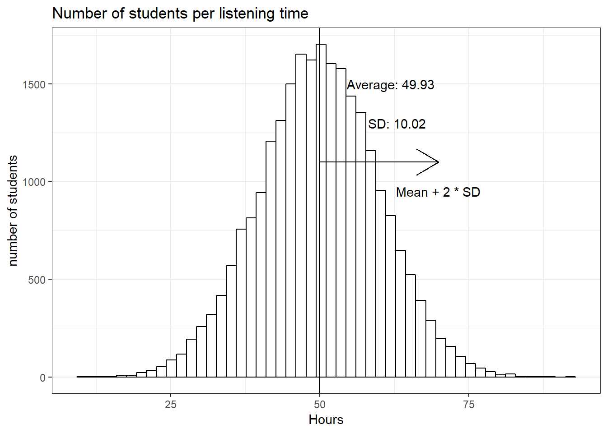
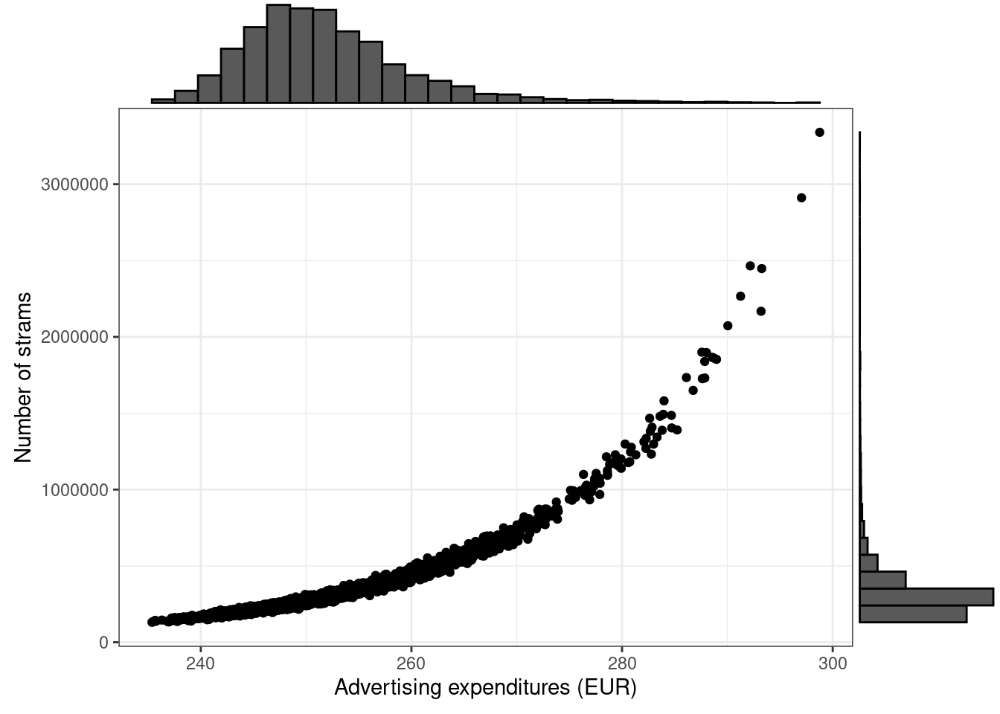
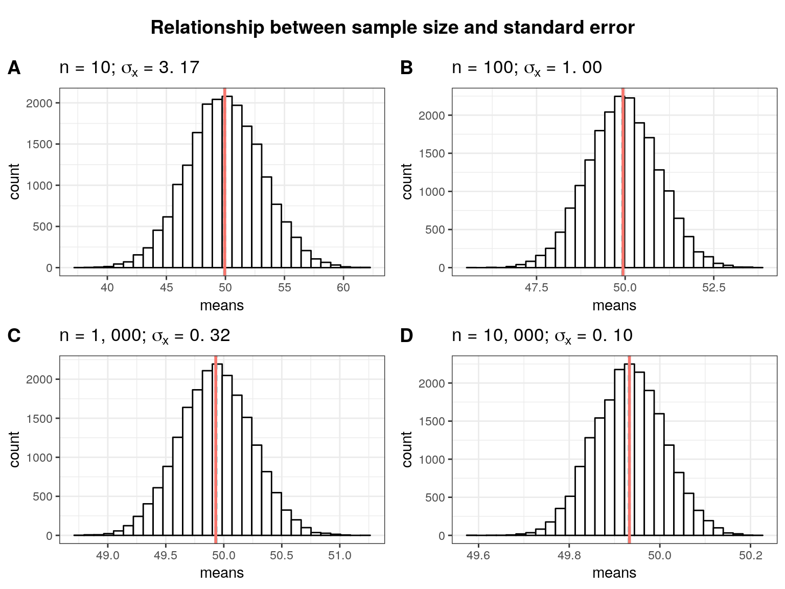
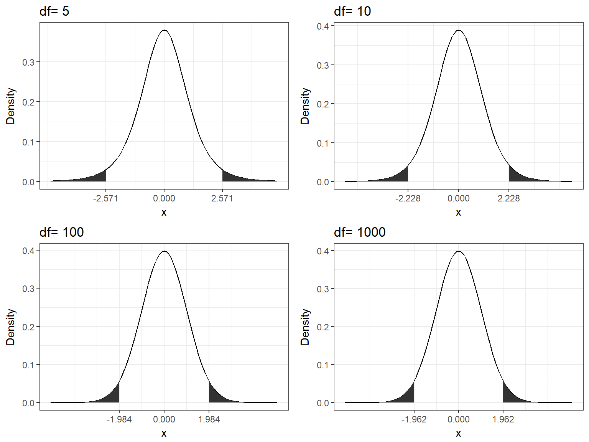
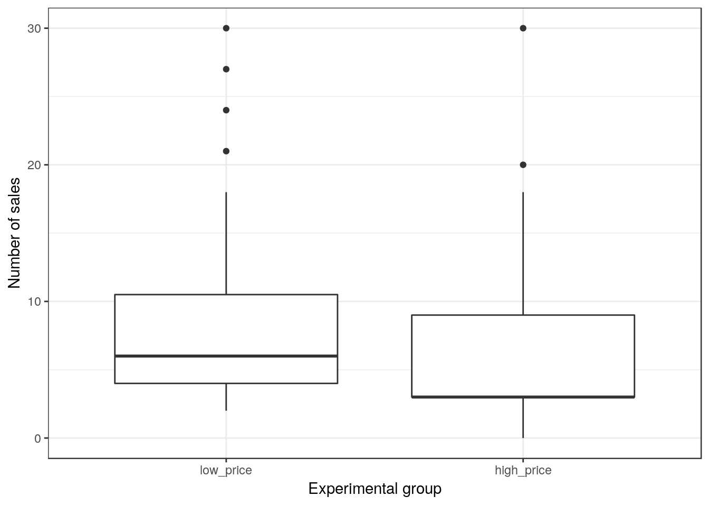
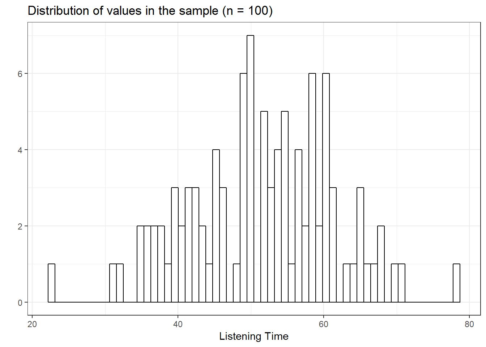
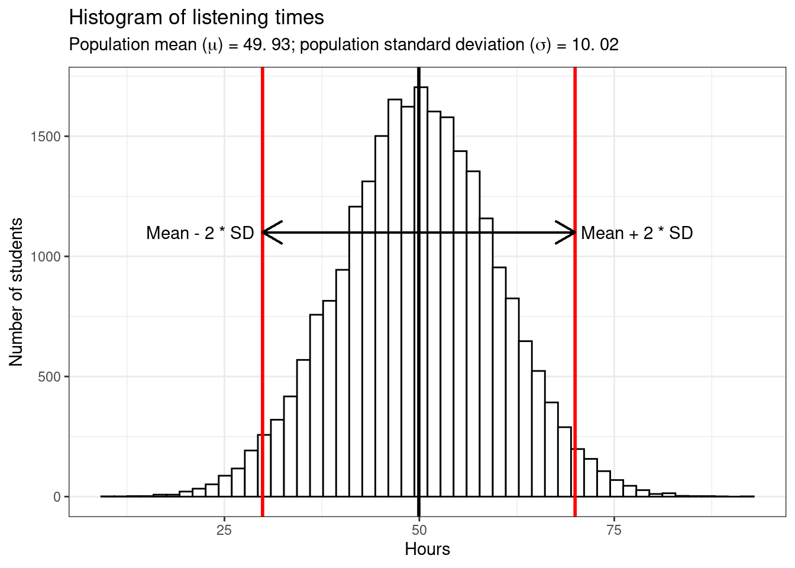

4 Introduction to Statistical Inference
This chapter will provide you with a basic intuition on statistical inference. Statistical inference is the bridge between the previous, more theoretical, chapters on random variables and probability distributions and the more applied subsequent chapters (e.g. hypothesis testing, regression, \(\dots\)). As marketing researchers we are usually faced with “imperfect” data in the sense that we cannot collect all the data we would like. Imagine you are interested in the average amount of time WU students spend listening to music every month. Ideally we could force all WU students to fill out our survey. Realistically we will only be able to observe a small fraction of students (maybe 500 out of the \(25.000+\)). With the data from this small fraction at hand we want to make an inference about the true average listening time of all WU students. We can use what we have learned so far together with some simple manipulations to make an inference about the likely values of the true average. We are going to start with the assumption that we know everything. That is, we first assume that we know all WU students’ listening times and analyze the distribution of the average or mean. Subsequently we are going to look at the uncertainty that is introduced by only knowing some of the students’ values and how that influences our analysis.
4.1 If we knew it all
Assume there are \(25,000\) students at WU and every single one has kindly provided us with the hours they listened to music in the past month. In this case we know the true mean (\(49.93\) hours) and the true standard deviation (SD = \(10.02\)) and thus we can easily summarize the entire distribution. Since the data follows a normal distribution roughly 95% of the values lie within 2 standard deviations from the mean.
In this case we refere to all WU students as the population. In general, the population is the entire group we are interested in. This group does not necessarily consist of people but could also be companies, stores, animals, etc. The parameters of the distribution of population values (in hour case hours) are called population parameters. As already mentioned we do not usually know population parameters but use inferencial statistics to infer them based on our sample from the population.
library(tidyverse)
set.seed(321)
hours <- rnorm(25000, 50, 10)
ggplot(data.frame(hours)) + geom_histogram(aes(hours),
bins = 50, fill = "white", color = "black") + ggtitle("Number of students per listening time") +
labs(y = "number of students", x = "Hours") + theme_bw() +
geom_vline(xintercept = mean(hours)) + annotate("text",
x = mean(hours) + 12, y = 1500, label = paste("Average:",
round(mean(hours), 2))) + annotate("text",
x = mean(hours) + 13, y = 1300, label = paste("SD:",
round(sd(hours), 2))) + geom_segment(aes(x = mean(hours),
y = 1100, yend = 1100, xend = (mean(hours) + 2 *
sd(hours))), lineend = "butt", linejoin = "round",
size = 0.5, arrow = arrow(length = unit(0.3, "inches"))) +
annotate("text", x = mean(hours) + 20, y = 950,
label = "Mean + 2 * SD")
4.1.1 Sampling from a known population
In the first step towards a realistic reasearch setting, let us take samples from this distribution and calculate the mean in each sample to get an idea of how much uncertainty we introduce by only knowing a part of the population.
Let’s first randomly sample 100 students without replacement (that is once a student has been drawn she or he is removed from the pool and cannot be drawn again) and calculate the mean. We can simply sample the row numbers of students and then subset the hours vector with the sampled rownumbers.
student_sample <- sample(1:25000, size = 100, replace = FALSE)
(m1 <- mean(hours[student_sample]))## [1] 50.28039Observe that in this first draw the mean is quite close to the actual mean. It seems like the sample mean is a decent estimate of the population mean. However, we could just be lucky this time and the next sample turns out to have a completely different mean. In order to make sure that this is not just pure luck and the sample mean is in fact a good estimate for the population mean let’s take many (e.g. \(20,000\)) different random samples and calculate their means. This will show us a range within which the sample mean of any sample we take is likely going to be.
We are going to store the means of all the sample in a matrix and then plot a histogram of the means to observe the likely values. The sample size is \(100\).
set.seed(12345)
samples <- 20000
means <- matrix(NA, nrow = samples)
for (i in 1:samples) {
student_sample <- sample(1:25000, size = 100, replace = FALSE)
means[i, ] <- mean(hours[student_sample])
}
meansdf <- data.frame(true = mean(hours), sample = mean(means))
meansdf <- gather(meansdf)
ggplot(data.frame(means)) + geom_histogram(aes(x = means),
bins = 30, fill = "white", color = "black") + theme_bw() +
geom_vline(data = meansdf, aes(xintercept = value,
color = key, linetype = key)) + scale_color_discrete(labels = c("Mean of sample means",
"Population mean")) + scale_linetype_discrete(labels = c("Mean of sample means",
"Population mean")) + theme(legend.title = element_blank()) +
ggtitle("Distribution of Sample Means")
As you can see, on average the sample mean (“mean of sample means”) is extremely close to the population mean despite only sampling \(100\) people at a time. However, there is some uncertainty, as visualized through the histogram. Some of the samples had a mean of below 47.5 and others above 52.5.
Let’s look at the means from the first \(5\) samples, the minimum and the maximum of the sample means:
head(means, 5)## [,1]
## [1,] 50.51424
## [2,] 50.86967
## [3,] 49.95716
## [4,] 50.58913
## [5,] 48.17745min(means)## [1] 46.00206max(means)## [1] 54.637In a realistic setting you are only going to be able to take a single sample. Due to the variation in the sample means shown in our simulation it is never possible to say exactly what the population mean is. However, even with a single sample we can infer a range of values within which the population mean is likely contained. In order to do so, notice that the sample means are roughly normally distributed. Their mean is roughly equal to the population mean, but what is their standard deviation? Intuitively, the larger the size of the sample we take every time, the less the standard deviation is going to be. Think of the two extremes: sample size \(1\) and sample size \(25,000\). With a single person in the sample we do not gain a lot of information and our estimate is very uncertain which is expressed through a larger standard deviation. Looking at the first histogram showing the number of students for each of the listening times, clearly we would get values below \(25\) or above \(75\) for some samples. This is way farther away from the population mean than the minimum and the maximum of our \(100\) person samples. On the other hand, if we sample every student we get the population mean every time and thus we do not have any uncertainty (assuming the population does not change). Even if we only sample say \(24,000\) people every time we gain a lot of information about the population every time and the sample means would not be very different from each other since only up to \(1,000\) people are potentially different in any given sample.
A second factor determining the standard deviation of the distribution of sample means is the standard deviation of the population. Again looking at the extremes illustrates this well. If all WU students listened to music for roughly the same amount of time the samples would not differ much from each other independently of the sample size. In other words if the standard deviation in the population is lower we expect the standard deviation of the sample means to be lower as well.
It turns out that the standard deviation of the sample means is
\[ \sigma_{\bar x} = {\sigma \over \sqrt{n}} \]
where \(\sigma\) is the population standard deviation and \(n\) is the sample size. Therefore, and increase in the population SD also increases and an increase in the number of observations per sample decreases the SD of the sample mean. Let’s take a look at this distribution. In the plot below the histogram also shows the density rather than the count to make the two comparable.
ggplot(data.frame(means)) + geom_histogram(aes(x = means,
y = ..density..), bins = 30, fill = "white", color = "black") +
stat_function(xlim = c(45, 55), fun = dnorm, n = length(means),
args = list(mean = mean(hours), sd = sd(hours)/sqrt(100)),
aes(color = "Theoretical Density")) + theme_bw() +
theme(legend.title = element_blank()) + ggtitle("Distribution of Sample Means")
4.2 The Central Limit Theorem
The attentive reader might have noticed that the population above was generated using a normal density. It would be very restrictive if we could only analyze populations whose values are normally distributed. Furthermore, we are unable in reality to check whether the population values are normally distributed since we do not know the entire population. However, it turns out that the results generalize to any distribution for which the mean exists (that is the mean is not infinity). This result is described in the central limit theorem.
The central limit theorem states that if (1) the population distribution has a mean and (2) we take a large enough sample then the sampling distribution of the sample mean is approximatelly normally distributed.
To illustrate this let’s repeate the analysis above with a population from a uniform distribution between \(0\) and \(100\). In the previous example it was more likely for a given student to spend around 50 hours per week listening to music. This example depicts the case in which any listening time between \(0\) and \(100\) hours is equally likely. You can plug in any distribution that has a mean and this analysis will still work.
set.seed(321)
hours <- runif(25000, 0, 100)
samples <- 20000
means <- matrix(NA, nrow = samples)
for (i in 1:samples) {
student_sample <- sample(1:25000, size = 100, replace = FALSE)
means[i, ] <- mean(hours[student_sample])
}
ggplot(data.frame(means)) + geom_histogram(aes(x = means,
y = ..density..), bins = 30, fill = "white", color = "black") +
stat_function(xlim = c(39, 61), fun = dnorm, n = length(means),
args = list(mean = mean(hours), sd = sd(hours)/sqrt(100)),
aes(color = "Theoretical Density")) + theme_bw() +
theme(legend.title = element_blank()) + ggtitle("Distribution of Sample Means with Uniform population")
The most prominent example in which this does not work is the chauchy distribution because it does not have a mean. This is illustrated below but is usually not a concern in a realistic reasearch setting.
set.seed(321)
hours <- rcauchy(25000, 50, 1)
samples <- 20000
means <- matrix(NA, nrow = samples)
for (i in 1:samples) {
student_sample <- sample(1:25000, size = 100, replace = FALSE)
means[i, ] <- mean(hours[student_sample])
}
ggplot(data.frame(means)) + geom_histogram(aes(x = means,
y = ..density..), bins = 60, fill = "white", color = "black") +
stat_function(xlim = c(-50, 300), fun = dnorm,
n = length(means), args = list(mean = mean(hours),
sd = sd(hours)/sqrt(100)), aes(color = "Theoretical Density")) +
theme_bw() + theme(legend.title = element_blank()) +
ggtitle("Distribution of Sample Means with Cauchy population")
4.2.1 Confidence Intervals for the Sample Mean
The discussion in the previous section was somewhat theoretical as the illustrations were done with a large amount of samples which we do not have in a realistic setting. However, the results provide us with the basis for statistical infrence given a single large enough sample. (What exactly large enough means depends on the setting but there is an interactive element below in which you can choose the sample size and see how the other values change.) We know that the mean of each sample is slightly different but the density of the sample means is normally distributed around the population mean with standard deviation \(\sigma_{\bar x}\). Given a sample mean we would now like to construct an interval around that mean that likely contains the population mean. We use the results above to draw a conclusion about how far away from the population mean any given sample mean would likely be and then construct an interval such that for a large share (say 95%) of the sample means we could potentially get, the population mean is within that interval. Since we know the distribution, the mean and assume to know the population SD for now, we can use the properties of the normal distribution. In the normal distribution roughly \(95\%\) of the density is within \(2\) standard deviations from the mean. This means that if we take any given sample mean and calculate our confidence interval as \(\bar x_1 \pm 2 * \sigma_{\bar x}\) in \(95\%\) of the cases the population mean is going to be within this interval. This is illustrated in the plot below that shows the mean of the first 100 samples and their confidence intervals.
set.seed(12345)
samples <- 100
hours <- rnorm(25000, 50, 10)
means <- matrix(NA, nrow = samples)
for (i in 1:samples) {
student_sample <- sample(1:25000, size = 100, replace = FALSE)
means[i, ] <- mean(hours[student_sample])
}
means_sd <- data.frame(means, lower = means - 2 * (sd(hours)/sqrt(100)),
upper = means + 2 * (sd(hours)/sqrt(100)), y = 1:100)
means_sd$diff <- factor(ifelse(means_sd$lower > mean(hours) |
means_sd$upper < mean(hours), "No", "Yes"))
ggplot(means_sd, aes(y = y)) + scale_y_continuous(breaks = seq(1,
100, by = 1), expand = c(0.005, 0.005)) + geom_point(aes(x = means,
color = diff)) + geom_errorbarh(aes(xmin = lower,
xmax = upper, color = diff)) + geom_vline(xintercept = mean(hours)) +
scale_color_manual(values = c("red", "black")) +
guides(color = guide_legend(title = "True mean in CI")) +
theme_bw()
Note that this does not mean that for a specific sample there is a \(95\%\) chance that the population mean lies within its confidence interval. The statment depends on the large number of samples we do not actually draw in a real setting. You can view the set of all possible confidence intervals similarly to the sides of a coin or a die as discussed in a previous chapter. If we throw a coin many times we are going to observe head roughly half of the times. This does not, however, exclude the possiblity of observing tails for the first 10 throws. Similarly, any specific confidence interval might or might not include the population mean but if we take many samples on average \(95\%\) of the confidence intervals are going to include the population mean.
4.3 Using what we actually know
So far we have assumed to know the population standard deviation. This an unrealistic assumption since we do not know the entire population. The best guess for the population standard deviation we have is the sample standard deviation, denoted \(s\). However, we have to account for the uncertainty introduced if we use the estimate rather than the real value. By using the sample the SD also becomes dependent on the specific sample and will thus have a standard deviation itself. In other words the SD itself varies from sample to sample. The new estimate of the standard deviation of the sampling distribution of the sample mean is now
\[ SE_{\bar x} = {s \over \sqrt{n}} \]
and is called the Standard Error (SE). \(s\) itself is a sample estimate of the population parameter \(\sigma\). This additional estimation should increase our confidence interval since we introduce new uncertainty. You can see in the interactive element below that the sample SD, on average, provides a good estimate of the population SD. That is the distribution of sample SDs that we get by drawing many samples is centered around the population value. Again, the larger the sample the closer any given sample SD is going to be to the population parameter and we introduce less uncertainty.
We will not go into detail about the importance of random samples but basically the correctness of your estimate depends crucially on having a sample at hand that actually represents the population. Unfortunatelly we will usually not notice if the sample is non-random. Our statistics are still a good approximation of “a” population parameter, namely the one for the population that we actually sampled but not the one we are interested in. To illustrate this uncheck the “Random Sample” box below. The new sample will be only from the top \(50\%\) music listeners (but this generalizes to different types of non-random samples).
4.3.1 The t-distribution
We have already seen the t-distribution in the chapter on probability distributions. Recall that if we sample from a normal distribution with mean \(\mu\) and standard deviation \(\sigma\) then
\[ \frac{\bar X - \mu}{s/ \sqrt{n}} \]
has a t-distribution with \(n-1\) degrees of freedom. Here \(\bar X\) denotes the sample mean and \(s\) the sample standard deviation. The t-distribution has more denisty in its “tails”, i.e. farther away from the mean. This reflects the higher uncertainty introduced by replacing the population standard deviation by its sample estimate. As \(n\) gets larger the t-distribution gets closer and closer to the normal distribution, reflecting the fact that the uncertainty introduced by \(s\) is reduced (see interactive part). Notice that due to the numerator the distribution is centered around \(0\) since the distribution of the sample means is centered around the population mean \(\mu\) deducted here.
To recap, we now have an estimate for the standard deviation of the distribution of the sample mean and an appropriate distribution that takes into account the necessary uncertainty.
The most important values we have talked about are:
- The sample mean \(\bar x\) which is an estimate of the population mean \(\mu\)
- The sample standard deviation \(s\) which is an estimate of the population standard deviation \(\sigma\)
- The standard error \(SE_{\bar x}\) which is an estimate of the standard deviation of the sample means \(\sigma_{\bar x}\)
Make sure to note that the standard deviation in 2. is the standard deviation of the observed values and the one in 3. is the standard deviation of the means of all the hypothetical samples. In our estimation both the mean and the standard deviation and therefore the confidence interval depend on the sample and will change if you take a different sample.
That is all we need for statistical inference on a single sample.
4.4 Statistical inference on a sample
Let us first take a single sample of WU students’ listening times
set.seed(12345)
hours <- rnorm(25000, 50, 10)
student_sample <- sample(1:25000, size = 100, replace = FALSE)
student_sample <- hours[student_sample]
(samp_mean <- mean(student_sample))## [1] 51.34345(samp_sd <- sd(student_sample))## [1] 10.03348(SE <- samp_sd/sqrt(100))## [1] 1.003348ggplot(data.frame(student_sample)) + geom_histogram(aes(x = student_sample),
fill = "white", color = "black", bins = 60) + theme_bw() +
ggtitle("Distribution of values in the sample (n = 100)") +
labs(x = "Listening Time", y = "")
We find the sample mean to be 51.34 and the sample standard deviation to be 10.03. Since the sample size is \(100\) the SE is 1.0033479. We can now ask whether the sample mean is significantly different from a given hypothesis. This hypothesis is a potential value for the population mean and is called the null hypothesis, denoted \(H_0\). If our sample mean is significantly different from the \(H_0\) we reject the null hypothesis and say that the mean is significantly different from our hypothesis. Usually the \(H_0\) is the outcome we do not want to observe. One common \(H_0\) is that there is no effect. If we then observe sufficient evidence against it and our estimate is said to be significant. Implicitly the \(H_0\) is often the value \(0\) and its rejection would mean the parameter value is significantly different from \(0\) (e.g. see OLS estimation in the chapter on linear regression).
In order to quantify the concept of “sufficient evidence” we look at the theoretical distribution of the sample means given our null hypothesis and the sample SE.
Let’s hypothesize that WU students, on average, spend 40h per week listening to music. Thus, \(\mu_{0} = 40\) is our null hypothesis. Plugging the hypothesis into the formula for the t-distribution yields the so called t-score.
H0 <- 40
(t_score <- (samp_mean - H0)/SE)## [1] 11.3056\[ {\bar X - \mu_0 \over s / \sqrt{n}} = {51.34 - 40 \over 1.003} = 11.31 \]
For continuous distributions the probability of observing a specific value is \(0\). We need a range of values to calculate the density that lies in that range. In order to determine the probability of observing the sample given our \(H_0\) we look at how much density lies beyond the calculated t-score. In The illustration below that is the area under the curve to the right of the red line.
x <- seq(-15, 15, length.out = 1000)
dens <- dt(x, 99)
ggplot(data.frame(x, dens), aes(x, dens)) + geom_line() +
geom_vline(xintercept = t_score, color = "red") +
labs(y = "Density", x = "t-score") + ggtitle("Theoretical density given null hypothesis 40 and sample t-score") +
theme_bw()
It is quite obvious that this is an extremely low value. The density that lies beyond the t-score is referred to as the p-value and is reported with many statistical tests. Let’s for example test if the mean of the listening hours is less than or equal to our \(H_0 = 40\). We can do this using the t-test. In this case the alternative hypothesis is that the true mean is not equal to \(40\) so it could be either greater or less. Therefore, this test is called two-sided.
t.test(student_sample, mu = H0, alternative = "two.sided")##
## One Sample t-test
##
## data: student_sample
## t = 11.306, df = 99, p-value < 0.00000000000000022
## alternative hypothesis: true mean is not equal to 40
## 95 percent confidence interval:
## 49.35259 53.33431
## sample estimates:
## mean of x
## 51.34345Alternatively we could ask whether the sample mean is greater than or equal to the \(H_0\) by specifying the alternative hypothesis to be 'less'. The null hypthesis - alternative hypothesis formulation can be confusing but you can think of the alternative hypothesis as all the cases that are not the null. So if your \(H_0\) is that the true mean is greater than or equal to 40 then the alternative is that it is less than 40. Now the reported p-value is \(1\). We are looking at the area to the left of the red line in the plot above since we now want to know how much density lies below our t-score. Note that this does not mean that we accept the \(H_0\). There is simply not enough evidence to reject it.
t.test(student_sample, mu = H0, alternative = "less")##
## One Sample t-test
##
## data: student_sample
## t = 11.306, df = 99, p-value = 1
## alternative hypothesis: true mean is less than 40
## 95 percent confidence interval:
## -Inf 53.0094
## sample estimates:
## mean of x
## 51.34345Lets look at a more realistic \(H_0 = 50\). In this example the t-score is close to \(0\) and thus the \(H_0\) is not rejected.
H0 <- 50
t.test(student_sample, mu = H0, alternative = "two.sided")##
## One Sample t-test
##
## data: student_sample
## t = 1.339, df = 99, p-value = 0.1836
## alternative hypothesis: true mean is not equal to 50
## 95 percent confidence interval:
## 49.35259 53.33431
## sample estimates:
## mean of x
## 51.34345To show how the p-value is calculated we can use the CDF of the t-distribution. Recall the definition that the CDF at a given value returns the density of the distribution below that value. So for the alternative hypothesis 'less' the p-value is just the CDF of the t-distribution with the degrees of freedom equal sample size \(- 1\).
(t_score <- (samp_mean - H0)/SE)## [1] 1.338963t.test(student_sample, mu = H0, alternative = "less")##
## One Sample t-test
##
## data: student_sample
## t = 1.339, df = 99, p-value = 0.9082
## alternative hypothesis: true mean is less than 50
## 95 percent confidence interval:
## -Inf 53.0094
## sample estimates:
## mean of x
## 51.34345pt(t_score, 99)## [1] 0.9081755For the alternative 'greater' we want to look at the density above the t-score which is just \(1-\) the density below since all densities sum to \(1\).
t.test(student_sample, mu = H0, alternative = "greater")##
## One Sample t-test
##
## data: student_sample
## t = 1.339, df = 99, p-value = 0.09182
## alternative hypothesis: true mean is greater than 50
## 95 percent confidence interval:
## 49.6775 Inf
## sample estimates:
## mean of x
## 51.343451 - pt(t_score, 99)## [1] 0.09182449With the two-sided test one has to be a bit more careful because we are looking at densities on both sides of the mean. The alternative hypothesis is that the true mean is either greater than or less than the \(H_0\). For the two-sided test we need to look at the density beyond the t-score (away from \(0\)) and double this density. We can simply double the p-value since the t-distribution is symmetric. For a positive t-score we look at the area to the right of the t-score (similar to the 'greater' alternative) and double that to account for the “other side”, i.e. the density below the green line in the plot below.
t.test(student_sample, mu = H0, alternative = "two.sided")##
## One Sample t-test
##
## data: student_sample
## t = 1.339, df = 99, p-value = 0.1836
## alternative hypothesis: true mean is not equal to 50
## 95 percent confidence interval:
## 49.35259 53.33431
## sample estimates:
## mean of x
## 51.343452 * (1 - pt(t_score, 99))## [1] 0.183649x <- seq(-15, 15, length.out = 1000)
dens <- dt(x, 99)
ggplot(data.frame(x, dens), aes(x, dens)) + geom_line() +
geom_vline(xintercept = t_score, color = "red") +
labs(y = "Density", x = "t-score") + ggtitle("Theoretical density given null hypothesis 50 and sample t-score") +
geom_vline(xintercept = -t_score, color = "green") +
theme_bw()
For a negative t-score we simple double the value of the CDF at that point. The t-score is negative if the \(H_0\) is greater than the sample mean and positive if it is less than the sample mean.
H0 <- 52
(t_score <- (samp_mean - H0)/SE)## [1] -0.6543634t.test(student_sample, mu = H0, alternative = "two.sided")##
## One Sample t-test
##
## data: student_sample
## t = -0.65436, df = 99, p-value = 0.5144
## alternative hypothesis: true mean is not equal to 52
## 95 percent confidence interval:
## 49.35259 53.33431
## sample estimates:
## mean of x
## 51.343452 * pt(t_score, 99)## [1] 0.5143954.5 Summary
When conducting research we are (almost) always faced with the problem of not having access to the entire group we are interested in. Therefore we use sample properties that we have derived in this chapter to do statistical inference based on a single sample. We use the parameters of the sample as well as the sample size to calculate the confidence interval of our choice (e.g. \(95\%\)). In practice most of this is done for us. With a sample at hand we need to choose the appropriate test and a null hypothesis. In this chapter we have explored a test for the mean of a sample, the t-test and had a look at their p-values. P-values are conditional probabilities of observing the sample at hand given that the \(H_0\) is true. We assume the \(H_0\) is true and then look at the data. There is a common misconception that the p-value provides some kind of probability for or against the \(H_0\) when really we are taking the null hypothesis as given and calculate the probability of observing the data. In this chapter we used a single sample t-test but the procedure of statistical inference is similar for many tests as you will see in the next chapters.